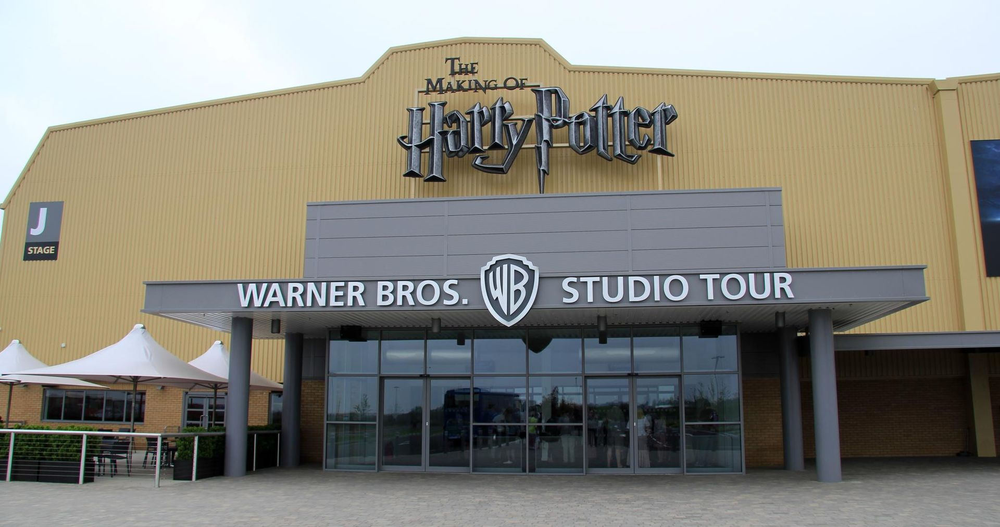

<~BACK

Warner Bros. Studios Tour London – The Making of Harry Potter
Warner Bros. Studios Tour London – The Making of Harry Potter is a public attraction in Leavesden in southeastern England. Not to be confused with the Wizarding World of Harry Potter of Universal Studios theme parks, it is a permanent exhibit offering an authentic behind-the-scenes glimpse of the Harry Potter films. It is situated inside Warner Bros. Studios, Leavesden in Leavesden, near Watford, in southwest Hertfordshire. Though the studios are still active, the tour is actually contained in two soundstages, J and K, and is kept separate from the rest of the complex.
Warner Bros. Studios Tour London is quite possibly the only permanent filmmaking exhibit of its size in the world. It opened to the public in 2012 and since then has welcomed up to 6,000 visitors a day during peak times. TripAdvisor reported that Warner Bros. Studio Tour London – The Making of Harry Potter has been the highest-rated attraction worldwide every year since the tour opened.
Platform 9¾
In January 2015, the attraction's first expansion was announced - a brand new Platform 9¾ section, where visitors are able to board the original carriages behind the Hogwarts Express steam engine used in the films. As with the rest of the attraction, the set was constructed and dressed by the original crew members who worked on the film - including Stuart Craig himself, who designed the new set exclusively for the tour (since these scenes in the films were actually shot on location in Kings Cross). The setup includes the steam locomotive used in the films GWR 4900 Hall class no 5972 Olton Hall (wearing Hogwarts Castle nameplates) and the British Rail Mark 1 carriage that appeared in the films, brought to life by John Richardson's special effects team. Finally a new green screen experience illustrates what working on the films is like from an actor's point of view. This section opened in late March 2015.
AWARDS
- 2013 Thea Award for Outstanding Achievement
- 2013 Telly Award for Editing
- 2013 Trip Advisor Certificate of Excellence
- 2013 UKinbound Award for Individual Attraction of the Year
- 2012 Event Technology Silver Award for Best Use of Handheld Technology
- 2012 UK Customer Experience Award for Best Leisure & Retail Experience
- 2012 Group Leisure Award for Best UK Attraction